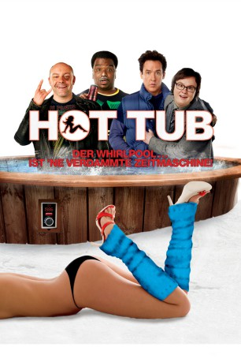
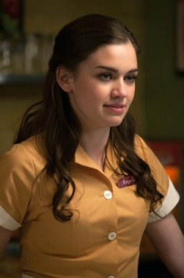

#7674 Hot Tub - Der Whirlpool... ist 'ne verdammte Zeitmaschine
Alternativ: Hot Tub Time Machine
 
 IMDB-Wertung: 6.4 / 10
IMDB-Wertung: 6.4 / 10  Metascore: 0
Metascore: 0 
L.A. 2010. Hot Tub zeigt uns die drei Freunde Adam, Lou und Nick und ihr alles andere als erfülltes Erwachsenenleben. Adam wurde mal wieder von seiner Freundin verlassen, Nick steht unter der Fuchtel seiner Frau und ist mit seinem Job unzufrieden, und auch der ehemalige Partylöwe Lou hat schon bessere Zeiten gesehen. Als dieser eines Tages bei laufendem Motor betrunken in seiner Gararge einschläft und nur knapp dem Tode entrinnt, interpretieren seine Freunde dies als Selbstmordversuch. Höchste Zeit, einmal für ein Wochendende ihrem tristen Alltag zu entfliehen und die alten Zeiten wieder aufleben zu lassen. Zusammen mit Adams Neffe Jacob kehren sie in Hot Tub zu der Skihütte zurück, wo sie früher ihre denkwürdigsten Nächte verbrachten. Als sich die Party in den hauseigenenen Whirpool verlagert, entpuppt sich dieser in Hot Tub als Zeitmaschine, welche die vier kurzerhand in das Jahr 1986 zurückkatapultiert.
Jahr: 2010
Dauer: 100 Minuten
FSK: 16
Land: USA Studio: MGM Distribution Co.Tonspuren: DTS - ,
Untertitel:
Auflösung: 1080p (1920x1040) Größe: 9564 MB
Genre: Sci-Fi, Komödie
Regisseur: Steve Pink
Drehbuch: Josh Heald
Soundtrack: Ivan Doroschuk
Darsteller:
 John Cusack als Adam
John Cusack als Adam Clark Duke als Jacob
Clark Duke als Jacob Craig Robinson als Nick
Craig Robinson als Nick Rob Corddry als Lou
Rob Corddry als Lou Sebastian Stan als Blaine
Sebastian Stan als Blaine- Lyndsy Fonseca als Jenny
 Crispin Glover als Phil
Crispin Glover als Phil Chevy Chase als Repairman
Chevy Chase als Repairman- Charlie McDermott als Chaz
- Lizzy Caplan als April
 Collette Wolfe als Kelly
Collette Wolfe als Kelly Crystal Lowe als Zoe
Crystal Lowe als Zoe- Jessica Paré als Tara
- Kellee Stewart als Courtney
-  Julia Maxwell als Lucy
 Geoff Gustafson als Dr. Jeff
Geoff Gustafson als Dr. Jeff Viv Leacock als Courtney's Dad
Viv Leacock als Courtney's Dad- Jamie Switch als Massive Cell Phone Guy
- Blaine Anderson als MC
- Daren A. Herbert als Receptionist
- Ecstasia Sanders als Girl at Club
- Edward Ruttle als Beer Luge Guy
- Paul Dzenkiw als Blaine's Crony
- Rhys Williams als Blaine's Crony
 Amy Esterle als Hot Tub Girl
Amy Esterle als Hot Tub Girl- Crystal Tisiga als Fancy Ski Girl
- Marie West als Winterfest Bartender
- Josh Heald als Terry
 William Zabka als Rick
William Zabka als Rick Jacob Blair als Gunnar , uncredited
Jacob Blair als Gunnar , uncredited Lynda Boyd als Adam's Secretary , uncredited
Lynda Boyd als Adam's Secretary , uncredited- Cole Carson als Guy in Kodiak Restroom , uncredited
- Eli Jane als Hot Tub Girl , uncredited
 Rob LaBelle als Stewart , uncredited
Rob LaBelle als Stewart , uncredited Thomas Lennon als Customer , uncredited
Thomas Lennon als Customer , uncredited Eddie Murphy als Himself , archive footage, uncredited
Eddie Murphy als Himself , archive footage, uncredited- Matt O'Neill als Bar Patron , uncredited
- Hannah Richter als Hot Groupie , uncredited
- Keith Roenke als Kodiak Club Guy , uncredited
- Adrienne Rusk als Kodiak Club Girl , uncredited
- Robert Wu als Mr. Wang , uncredited
- Aliu Oyofo als Young Nick
- Jake Rose als Young Adam
- Brook Bennett als Young Lou
- Austin Warren als Nick's Band Member
- Adam Sabla als Nick's Band Member
- Jocelyn C. Waugh als Nick's Band Member
- Curtis Santiago als Nick's Band Member
- Ryan Guldemond als Nick's Band Member
- Jeremy Page als Nick's Band Member
Datei: X:\2-Dilogie(G-M)\Hot Tub\Hot Tub - Der Whirlpool... ist 'ne verdammte Zeitmaschine (2010, FSK16, 1920x1040).mkv seit 30.11.2017
Festplatte: HD Collection-2(A-Z)-3(A-M)
 Alle Filme aus Gruppe '2-Dilogie(G-M)\Hot Tub'
Alle Filme aus Gruppe '2-Dilogie(G-M)\Hot Tub'